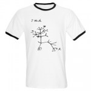

Society of Systematic Biologists
Home of Systematic Biology
Popular contentSyndicateCategories
User loginNavigationWho's onlineThere are currently 0 users and 1 guest online.
|
GeneralSSB student awardees
Ernst Mayr Award Evolver ZoneT. Ryan Gregory has created Evolver Zone, a resource for students, teachers, and researchers with an interest in evolution. The site contains links to multimedia (including a a beginner√¢‚?¨‚?¢s guide to making a phylogenetic tree), software, databases, professional societies, journals, and books, and is supported by sales from it's EZ Store. Call for Proposals - NESCent Sabbatical Scholars, Working Groups and Catalysis Groups
For more information, please see our website at https://www.nescent.org/science/proposals.php. EvolDir on Twitter
I've also created an RSS feed for EvolDir, so the last three posting will appear on the right hand side of this website (see the heading "EVOLDIR"). SB author to appear on the Colbert Report!Dr. Jason Bond, of East Carolina University, will appear on the TV show "The Colbert Report" the night of Wednesday, August 6th. He promised to name a species of trapdoor spider after Stephen Colbert, which he does in his Systematic Biology August '08 paper, √¢‚?¨≈?An integrative method for delimiting cohesion species: finding the population-species interface in a group of Californian trapdoor spiders with extreme genetic divergence and geographic structuring,√¢‚?¨¬ù co-authored by Amy K. Stockman, also of East Carolina University. The paper will be available from Taylor and Francis free for 6 months. Bond named a spider after the musician Neil Young earlier this year, Myrmekiaphila neilyoungi, which sparked the attention of Colbert. √¢‚?¨≈?Where√¢‚?¨‚?¢s my spider?√¢‚?¨¬ù Colbert asked on his show. √¢‚?¨≈?The world demands an eight-legged tribute to Stephen Colbert, and I do not mean another barbershop quartet.√¢‚?¨¬ù Jason Bond accepted the challenge in an earlier on-air phone interview, and will appear in person on the 6th along with several live specimens of Colbert's namesake. R. J. H. Hintelmann Award for zoological systematics
Please send applications or nominations until July 15th 2008 to the following address: Society of Systematic Biology LOGO CONTEST!The Society of Systematic Biology needs a new and modern logo that represents our inclusive and international efforts to promote the systematic study of biodiversity. We solicit submissions of potential SSB logos from our membership (or potential members!). If you are a creative, artistic systematist, please consider submitting a logo for this competion. Contest Details: Nominations for SSB ElectionsMembers may recognize the contributions of investigators in the field of Systematic Biology by nominating them for governing positions in SSB. As stated in Bylaw 3 of the SSB constitution: A call for nominations for President-Elect, if necessary for President, and Councilors shall be issued by the Past President via the Executive VP to the membership either in Systematic Biology or by paper or electronic mail, six months prior to the Annual Meeting. Such nominations shall consist of a brief statement of the qualifications of the nominee, evidence that the nominee is willing to serve and attend all council meetings during the term of office. Recommendations are to be received by the Chairperson of the Nominating Committee and the Executive Vice President at least five months prior to the Annual Meeting. Please send any nominations to chris.simon@uconn.edu and dhibbett@clarku.edu by 15 February 2008. PhyloCode: Version 4b now online
The PhyloCode is a formal set of rules governing phylogenetic nomenclature. It is designed to name the parts of the tree of life by explicit reference to phylogeny. The PhyloCode will go into operation in a few years, but the exact date has not yet been determined. It is designed so that it may be used concurrently with the existing codes based on rank-based nomenclature (ICBN, ICZN, etc.). We anticipate that many people whose research concerns phylogeny will find phylogenetic nomenclature advantageous. There is a forum for discussing the Phylocode at the International Society for Phylogenetic Nomenclature. SSB election results are in!To those members who voted, thank you for your participation. As always, a big thank you to all of those willing to serve in the administration of the society. President-elect: John Huelsenbeck The constitutional changes have been passed. (The voting link was posted at the top of this website. If you did not also receive an email notification before the election regarding casting your vote, please notify Heide Rohland at hrohland@burkinc.com in case your membership information is out of date.) |
Latest issue
EVOLDIRphylobabble.orgiPhyloPhyloseminarSystematics AssociationNESCentThe Genealogical World of Phylogenetic NetworksCiteULike PhylogenyEvolutionary Bioinformatics
CladisticsBMC Evolutionary Biology
Molecular Biology and Evolution |
 Follow us on Twitter
Follow us on Twitter Find us on Facebook
Find us on Facebook